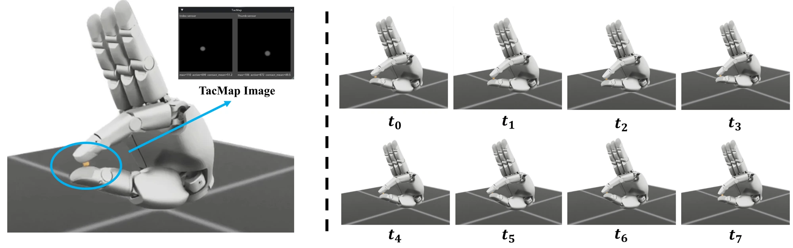
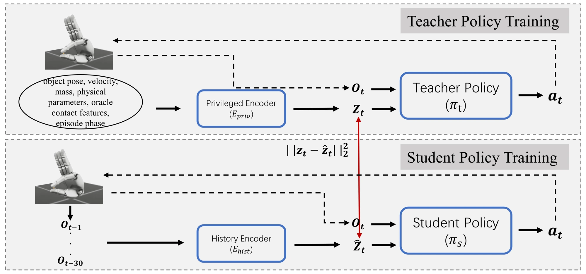

Sharpa Wave Hand · TacMap
Tactile RL
触觉强化学习驱动的 指尖灵巧操作
如何只靠两个指尖，一边保持接触，一边连续旋转小球？在 Sharpa Wave Hand 上结合 TacMap 触觉仿真与强化学习，使策略从指尖触觉和本体感知历史中估计接触变化，并在 Isaac Sim 中完成连续操作。
从触觉感知到动作学习


让策略感知接触变化
以拇指和食指作为操作接触点，使用 TacMap 将指尖表面的接触压入映射为触觉图像；提取接触中心、接触区域和压入程度等特征，与关节状态一起构成策略观测。控制目标兼顾旋转进展、双指接触与滑移抑制。


从特权信息到触觉历史
首先采用 PPO 训练可访问物体状态与接触信息的教师策略，通过逐步增加重力降低早期探索难度。随后进行交互式策略蒸馏：让学生在自身访问的状态上获得教师指导，并通过时序编码学习隐状态与动作，不再依赖仿真中的物体真值。
仿真验证
在 Isaac Sim 中完成任务搭建、教师策略训练、学生策略蒸馏与对比验证。学生策略利用本体感知与双指触觉历史，在变化的方向指令下保持小球连续旋转；相比教师策略，长时接触保持仍有差距。当前结果均来自仿真。